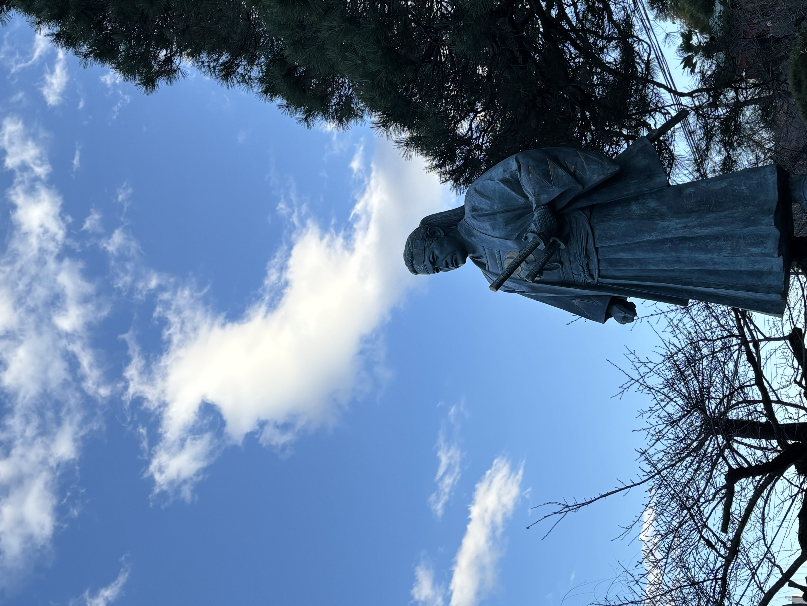

無外流 鵬玉会との出会い
コロナ禍が明け、「無理のない範囲で、一生をかけて心身を鍛えられるものを」と考え、出会ったのが国際居合道連盟 鵬玉会（ほうぎょくかい）でした。江戸時代から300年以上受け継がれてきた実戦居合「無外流（むがいりゅう）」の、一切の無駄を削ぎ落とした研ぎ澄まされた美しさに強い衝撃を受け、自然と日本刀の世界へと深く没頭していきました。
毎日の自宅での自主稽古と、週に複数回の道場通いを重ねる中でその姿勢を評価いただき、現在は内弟子（uchideshi）として、単なる習い事の枠を超え、武道の精神を日常の生き方そのものに昇華させる修行を続けています。
日常に活きる武道精神：心は常に「静」、そして丸くあれ
鵬玉会で重んじられるこの教えは、私の人生、特に家庭で幼い子どもたちと向き合う瞬間に大きな変化をもたらしました。
仕事で疲れているときや、日常の中でつい心がざわつき、強い言葉を使ってしまいそうになる瞬間があります。その一瞬にスッと深く呼吸を整え、刀を抜くときのように心を「静」に、相手を包み込むように「丸く」保つ。武道を通じて培ったこのブレない軸が、自分の中に確かな「許容の空白（余裕）」を生み出します。感情をぶつけるのではなく、余裕を持って子どもたちと接することで、互いに100%信頼し合える強い絆が育まれていると実感しています。
武道としての追求：3拍子揃った「斬れる居合」
鵬玉会が追求する居合の本質は、踊りのような美しさではなく、実戦に裏付けられた「強さ」です。形・組太刀・試し斬りの3つを三位一体で網羅することを目指しています。
- 形（かた）：仮想の敵を眼前に描き、ミリ単位の刃筋、足捌きを徹底的に身体に染み込ませます。例えば基本の一撃である「横一（よこいち）」の水平な鋭い一閃など、誰が見ても寸分の隙もない美しい所作を研ぎ澄まします。
- 組太刀（くみたち）：木刀を合わせ、実在する相手とリアルな間合いを測り合います。呼吸を読み、一瞬の隙を突くことで、静止画ではなく「動く敵」に対する実践的な身体の使い方を習得します。
- 試し斬り（抜刀）：「居合の本義は抜刀の一瞬にあり」。鵬玉会では実際に真剣を握り、畳表を斬ることで、自分の刃筋が本当に正しかったのか、ごまかしの利かない結末と向き合います。まさに「抜き即斬」の理合いの研究です。
鵬玉会の百足伝（ひゃくそくでん）にある、「稽古には清水の末の細々と絶えず流るる心こそよき」という言葉を大切にしています。一気に派手に動くのではなく、清水の湧き水が絶え間なく細く長く流れるように、毎日一歩ずつ、一生をかけて自分を磨き続ける非日常の空間が、ここにあります。
他のページを見る